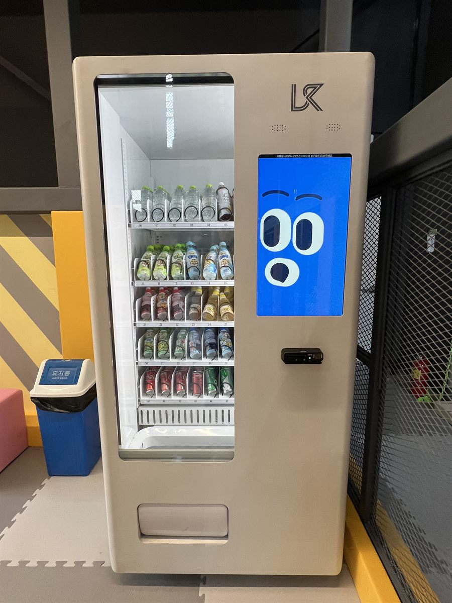

키즈카페는 손님이 둘인 업종입니다. 뛰어노는 건 아이지만 지갑을 여는 건 보호자입니다. 그래서 자판기도 아이 눈에 잘 보이되, 결제는 보호자가 하기 편한 자리에 있어야 합니다. 사진의 현장은 놀이 구역을 둘러싼 안전망 바로 앞입니다. 놀다 나온 아이가 가장 먼저 지나가는 곳이면서, 보호자가 아이를 지켜보며 서 있는 자리이기도 합니다.
현장에서 먼저 본 것은 바닥이었습니다. 사진처럼 키즈카페는 대부분 퍼즐형 폼 매트가 깔려 있습니다. 음료를 가득 채운 냉장 자판기는 무게가 상당해서, 매트 위에 그냥 세우면 며칠 사이 다리 쪽이 눌려 기계가 앞으로 기웁니다. 그래서 기계 아래만 단단한 받침판을 대고 그 위에서 수평을 다시 맞췄습니다. 두 번째는 넘어짐입니다. 아이들은 자판기 유리에 매달리고 밀기도 합니다. 뒤쪽을 벽이나 기둥에 고정해 앞으로 쏠리지 않게 했습니다. 세 번째는 간격입니다. 안전망과 기계 사이가 애매하게 벌어지면 아이가 그 틈으로 들어갑니다. 틈을 아예 없애거나 사람이 지나갈 만큼 넉넉히 두거나, 둘 중 하나로 정했습니다.
아산 키즈카페에 맞는 구성
진열은 높이로 나눴습니다. 아이 눈높이인 가운데 칸들에는 어린이 음료를, 맨 위 칸에는 생수를, 무거운 캔은 맨 아래 칸에 넣었습니다. 아이가 "저거" 하고 가리키는 칸이 보호자에게도 잘 보이게 한 배치입니다. 뛰고 나온 아이에게 필요한 건 결국 물이라 생수는 한 줄을 통째로 잡았습니다.
결제는 카드와 삼성페이·카카오페이·네이버페이를 받고 현금함은 넣지 않았습니다. 화면은 세로형 터치 방식이라 아이가 눌러 봐도 결제 전에는 아무것도 나오지 않습니다. 재고와 매출은 휴대폰 앱에서 바로 확인되고, 칸이 비면 알림이 옵니다. 주말 오후처럼 손님이 몰리는 날 카운터를 비우지 않고도 무엇을 채워야 할지 알 수 있습니다.
키즈카페 자판기, 좋은 점과 어려운 점
좋은 점부터 적겠습니다. 첫째, 카운터 일이 줄어듭니다. 음료 하나 사려고 줄을 서던 보호자가 기계에서 바로 사 가니, 직원은 입장 안내와 안전 관리에 집중할 수 있습니다. 둘째, 머무는 시간이 길어집니다. 목이 마르다고 나가지 않아도 됩니다. 셋째, 외부 음식 반입 문제가 줄어듭니다. 안에서 살 수 있으면 굳이 사 들고 오지 않습니다.
어려운 점도 솔직히 적습니다. 첫째, 평일과 주말 차이가 큽니다. 주말과 방학에 몰리고 평일 오전은 조용합니다. 유통기한이 짧은 품목은 신중하셔야 합니다. 둘째, 유리 앞면 관리입니다. 아이 손자국이 금방 남아서 자주 닦아야 안이 잘 보입니다. 셋째, 단 음료 비중입니다. 보호자 눈치를 보는 품목이라 단 음료만 채우면 오히려 덜 팔릴 수 있습니다. 넷째, 임대 매장 조건입니다. 전기 용량과 관리 주체 동의를 기계를 고르기 전에 확인하시는 편이 안전합니다.
아산 무인매장, 이런 자리가 잘 됩니다
아산은 온양온천 구도심과 배방·탕정 신도시, 북쪽의 산업단지가 한 도시 안에 나뉘어 있습니다. 첫째는 배방읍과 탕정면 일대입니다. 천안아산역 주변으로 아파트 단지가 크게 들어서 아이 있는 가구가 많고, 키즈카페·학원·상가가 함께 모인 자리가 자주 나옵니다. 둘째는 온양온천역 주변 구도심입니다. 온천 관광과 오래된 상권이 섞여 있어 숙박시설과 상가 쪽 문의가 있습니다. 셋째는 인주면·둔포면·음봉면 쪽 산업단지와 공장입니다. 교대 근무가 있는 사업장 휴게실은 평일에 꾸준히 돕니다. 넷째는 대학 주변으로, 신창면의 순천향대와 배방읍의 호서대 아산캠퍼스, 탕정면의 선문대 인근 원룸촌이 있습니다. 같은 아산이라도 신도시는 주말, 산업단지는 평일에 몰리니 상담 때는 사람이 가장 많은 요일과 시간부터 여쭙습니다.
아산 서비스 지역
동 — 온천동 · 실옥동 · 방축동 · 권곡동 · 모종동 · 풍기동 · 용화동 · 배미동 · 법곡동 · 장존동 · 좌부동 · 남동 · 읍내동 · 점양동 · 득산동
읍면 — 배방읍 · 염치읍 · 탕정면 · 음봉면 · 둔포면 · 영인면 · 인주면 · 선장면 · 도고면 · 신창면 · 송악면
역 — 천안아산역 · 아산역 · 배방역 · 온양온천역 · 신창역 · 도고온천역
주요 시설 — 순천향대 · 호서대 아산캠퍼스 · 선문대 · 아산시청 · 온양온천 · 현충사 방면
인접 — 천안(불당 · 두정 · 성거) · 당진 · 예산 · 공주 · 세종 · 경기 평택(포승 · 안중) 방면
충남 전역(천안 · 서산 · 당진 · 논산 · 공주 · 보령)과 대전 · 세종까지 같은 조건으로 나갑니다.
아산 무인창업, 이렇게 시작하시면 됩니다
설치비는 받지 않습니다. 자리 확인부터 품목 구성, 기계 반입, 카드 결제 연동, 재고 채우는 방법까지 한 번에 안내해 드립니다. 키즈카페처럼 바닥이 매트이고 아이가 많은 자리는 기계 성능보다 받침과 고정, 안전망과의 간격이 먼저입니다. 견적 전에는 전기 위치·벽면 폭·반입 경로를 확인하니, 놓을 자리 사진 한 장과 바닥 재질만 알려 주셔도 미리 봐 드립니다.
비용은 구입이 렌탈보다 유리한 편입니다. 오래 쓸수록 차이가 벌어집니다. 다만 임대 기간이 짧게 남았거나 시범으로 돌려 보는 경우라면 렌탈도 함께 비교해 보시는 편이 낫습니다. 구성별 36개월 총비용은 구입 vs 렌탈 비교 가이드에 정리해 두었습니다.
관련 검색어: 아산무인자판기 · 아산무인자판기설치 · 아산키즈카페자판기 · 배방자판기 · 탕정자판기
아산 무인자판기 설치 상담
세워 둘 자리 사진 한 장만 보내 주셔도 됩니다. 바닥 재질과 전기 위치, 반입 경로를 보고 들어갈 수 있는 크기와 고정 방법을 먼저 봐 드린 뒤 견적을 보내 드립니다.
※ 사진은 픽포스가 시공한 설치 사례이며, 글에 적힌 지역의 현장 사진은 아닙니다. 자판기 구성과 품목은 자리와 업종에 따라 달라지며, 매트 바닥 설치는 받침과 고정 방법을 현장에서 먼저 확인합니다. 정확한 금액은 견적서로 안내드립니다.